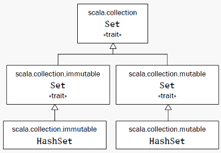
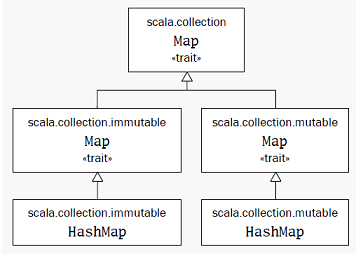

val不可变变量；var可变变量。格式：
// 基本格式 val msg: java.lang.String = "Hello" // java.lang默认已经导入了 val msg: String = "Hello" // 自动推导类型 val msg = "Hello"
Scala语句以分号结束，而且分号可以省略。默认一行结束了就是一行语句结束了， 除非以下三种情况，会认为语句还没有结束：
()和[]里，这里面不能放多条语句。
这是两个：
val s = "hello"; println(s)
if (x < 2)
println("too small")
else
println("ok")
这是两个：
x + y
一个：
(x + y)
一个：
x + y + z
取最大的函数，函数体的最后一行作为结果返回：
def max(x: Int, y: Int): Int = {
if (x > y) x else y
}
函数类型也能自动推导出来，可以省略。在递归函数的情况下， 一定要明确地说明返回类型。如果函数体只有一行，那花括号也可以省略：
scala> def max(x: Int, y: Int) = if (x > y) x else y max: (x: Int, y: Int)Int
类型Unit对应Java中的void。即没有参数又没有返回结果的函数定义：
scala> def greet() = println("Hello")
greet: ()Unit
对于没有等号的方法来说返回类型一定是Unit。Scala可以把任何类型转为Unit，
以下方法最后的String类结果会转为Unit并丢弃：
scala> def f(): Unit = "This String is lost!" f: ()Unit
有花括号但没有等号的方法默认为Unit，有了等号但没有类型会由编译器自动推导：
scala> def f() {"This String is lost!"}
f: ()Unit
scala> def f() = {"This String get returned!"}
f: ()java.lang.String
scala> f
res2: java.lang.String = This String get returned!
函数字面量用=>来分隔参数表与函数体：
(x:Int, y:Int) => x + y
通过函数字面量来迭代处理参数的例子：
args.foreach( (arg: String) => println(arg) )
这里的String类型可以自动推导出来：
args.foreach( arg => println(arg) )
在这种字面量只有一行而且只有一个参数情况下，可以省掉参数列表：
args.foreach( println )
scala> for (i <- 0 to 10) print(i) 012345678910
下面的语句产一个从0到5的集合：
scala> 0 to 5 res9: scala.collection.immutable.Range.Inclusive = Range(0, 1, 2, 3, 4, 5)
其实这个to是一个方法的调用。Scala中对于方法调用时，如果方法只有一个参数的话
可以省略括号，原本的样子是：
(0).to(5)
scala中没有操作符的重载，因为操作符也是方法的名字：
1 + 2
相当于：
(1).+(2)
Scala在构成标识符方面有四种非常灵活的规则：
字母数字标识符起始于一个字母或下划线，之后可以跟字母，数字，或下划线。
$也被当作是字母，但是被保留作为Scala编译器产生的标识符之用。
用户程序里的标识符不应该包含美元字符，尽管能够编译通过；
但是这样做有可能导致与Scala编译器产生的标识符发生名称冲撞。
Scala遵循Java的驼峰式标识符习俗。尽管下划线在标识符内是合法的，
但在Scala程序里并不常用，部分原因是为了保持与Java一致，
同样也由于下划线在Scala代码里有许多其它非标识符用法。
因此，最好避免使用像to_string，__init__，或name这样的标识符。
用下划线当标识符会引起的一个麻烦就是：如果你尝试写一个这样的定义：
val name_: Int = ，你会收到一个编译器错误。编译器会认为你正常是定义一个叫做
name_:的变量。
要让它编译通过，你将需要在冒号之前插入一个额外的空格，
如：val name_ : Int = 1。
字段，方法参数，本地变量，还有函数的驼峰式名称，应该以小写字母开始，如：
length，flatMap，还有s。
类和特质的驼峰式名称应该以大写字母开始，如：BigInt，List，
还有UnbalancedTreeMap。
Scala与Java的习惯不一致的地方在于常量名。
Scala里，constant这个词并不等同于val。尽管val在被初始化之后的确保持不变，
但它还是个变量。比方说，方法参数是val，但是每次方法被调用的时候这些val都可以
代表不同的值。而常量更持久。比如scala.Math.Pi显然是个常量。
Java里，习惯上常量名全都是大写的，用下划线分隔单词，如MAX_VALUE或PI。
Scala里习惯用驼峰式风格，如XOffset。
操作符字符是一些如+，:，?，~或#的可打印的ASCII字符。常见的例子：
+ ++ ::: <?> :->
Scala编译器将内部会把操作符标识符转码成包含$的合法的Java标识符。
例如，标识符:->将在内部将被表达为：
$colon$minus$greater
若你想从Java代码访问这个标识符，就应使用这个内部表达。
Scala里的操作符标识符可以有多个字符，因此在Java和Scala间有一些小差别。
Java里，输入x<-y将会被拆分成四个词汇符号，所以写成x < - y也没什么不同。
Scala里，<-将被作为一个标识符拆分，而得到x <- y。如果你想要得到Java里
那样的解释，你要在<和-字符间加一个空格。这大概不会是实际应用中的问题，
因为没什么人会在Java里写x<-y的时候不注意加空格或括号的。
混合标识符由字母数字组成，后面跟着下划线和一个操作符标识符。例如，unary_+
被用做定义一元的+操作符的方法名。或者，myvar_=被用做定义赋值操作符的方法名。
多说一句，混合标识符格式myvar_=是由Scala编译器产生的用来支持属性：
property的。在以后的章节“有状态对象”中进一步说明。
文本标识符是用反引号包括的任意字串。如：
`x` `<clinit>` `yield`
它的思路是你可以把任何运行时认可的字串放在反引号之间当作标识符。结果总是Scala 标识符。即使包含在反引号间的名称是Scala保留字，这个规则也是有效的。
在Java的Thread类中访问静态的yield方法是其典型的用例。因为yield是Scala
的保留字所以Thread.yield()是不合法的，因此在调用java的yield方法时要这样写：
Thread.`yield`()
长度为3的数组，存放的元素类型为String：
val gs: Array[String] = new Array[String](3)
scala> val gs = new Array[String](3)
gs: Array[String] = Array(null, null, null)
scala> gs(0) = "aa"
scala> gs(1) = "bb"
scala> gs(2) = "cc"
scala> gs.foreach(print)
aabbcc
scala> val ns = Array("11","22","33")
ns: Array[java.lang.String] = Array(11, 22, 33)
scala> ns.foreach(print)
112233
对一个对象的后面加上括号的操作其实是调用了这个对象的apply方法。
所以数组的元素索引操作其实是apply方法调用：
gs(0)
//相当于：
gs.apply(0)
val ns = Array("11","22","33")
//相当于：
val ns = Array.apply("11","22","33")
对带有括号并包括一到多个参数的变量赋值时，编译器使用对象的update方法对括号里的
参数（索引值）和等号右边的对象执行调用：
gs(0) = "aa" //相当于： gs.update(0, "aa")
与java.util.List不同，scala.List是不可变的。不可变的对象更加符合函数式风格。
scala> val ll = List(1,2,3) ll: List[Int] = List(1, 2, 3)
::（读作cons）把一个元素加到列表的头上； 用:::连起两个列表：
scala> 0 :: ll res12: List[Int] = List(0, 1, 2, 3) scala> val ll2 = List(4,5,6) ll2: List[Int] = List(4, 5, 6) scala> ll ::: ll2 res11: List[Int] = List(1, 2, 3, 4, 5, 6)
一个元素也没有的空列表用Nil表示，作为一个空的列表，它可以把其他的元素给串起来：
scala> val nl = 1 :: 2 :: 3 :: Nil nl: List[Int] = List(1, 2, 3)
List只能把元素加在头上，如果要加在后面的话，一个方法是在加到头上以后再调用
reverse方法；还有一个方案是使用ListBuffer，它有append方法。
List() 或 Nil // 空List
List("Cool", "tools", "rule") // 创建带有三个值"Cool"，"tools"和"rule"的新List[String]
val thrill = "Will"::"fill"::"until"::Nil // 创建带有三个值"Will"，"fill"和"until"的新List[String]
List("a", "b") ::: List("c", "d") // 叠加两个列表（返回带"a"，"b"，"c"和"d"的新List[String]）
thrill(2) // 返回在thrill列表上索引为2（基于0）的元素（返回"until"）
thrill.count(s => s.length == 4) // 计算长度为4的String元素个数（返回2）
thrill.drop(2) // 返回去掉前2个元素的thrill列表（返回List("until")）
thrill.dropRight(2) // 返回去掉后2个元素的thrill列表（返回List("Will")）
thrill.exists(s => s == "until") // 判断是否有值为"until"的字串元素在thrill里（返回true）
thrill.filter(s => s.length == 4) // 依次返回所有长度为4的元素组成的列表（返回List("Will", "fill")）
thrill.forall(s => s.endsWith("1")) // 辨别是否thrill列表里所有元素都以"l"结尾（返回true）
thrill.foreach(s => print(s)) // 对thrill列表每个字串执行print语句（"Willfilluntil"）
thrill.foreach(print) // 与前相同，不过更简洁（同上）
thrill.head // 返回thrill列表的第一个元素（返回"Will"）
thrill.init // 返回thrill列表除最后一个以外其他元素组成的列表（返回List("Will", "fill")）
thrill.isEmpty // 说明thrill列表是否为空（返回false）
thrill.last // 返回thrill列表的最后一个元素（返回"until"）
thrill.length // 返回thrill列表的元素数量（返回3）
thrill.map(s => s + "y") // 返回由thrill列表里每一个String元素都加了"y"构成的列表（返回List("Willy", "filly", "untily")）
thrill.mkString(", ") // 用列表的元素创建字串（返回"will, fill, until"）
thrill.remove(s => s.length == 4) // 返回去除了thrill列表中长度为4的元素后依次排列的元素列表（返回List("until")）
thrill.reverse // 返回含有thrill列表的逆序元素的列表（返回List("until", "fill", "Will")）
thrill.sort((s, t) => s.charAt(0).toLowerCase < t.charAt(0).toLowerCase)
// 返回包括thrill列表所有元素，并且第一个字符小写按照字母顺序排列的列表（返回List("fill", "until", "Will")）
thrill.tail // 返回除掉第一个元素的thrill列表（返回List("fill", "until")）
所有以:结尾的方法其实是后一个操作数调用前一个操作数，所以：
0 :: ll // 其实是 ll.::(0) ll ::: ll2 // 其实是 ll2.:::(ll)
回到前面的串列表操作：
val nl = 1 :: 2 :: 3 :: Nil
如果没有最后的Nil，就变成了3.::(2)。因为数字没有::方法，这样就会报错。
元组像列表，但可以放不同类型的元素。这样类似于Java Bean，但写起来更加简单。
元组的类型按字段个数来识别，有2个字段的就是Tuple2、3个就是Tuple3，
Scala最多支持到Tuple22：
scala> val pair = (99, "Luft") pair: (Int, java.lang.String) = (99,Luft)
访问字段通过_序号来实现。不能像数组一样用()的原因是：如果要用apply方法，
那定义方法的时候就要声明返回类型，而同一个元组中元素的类型是不同的，
所以写不出这个apply方法。
scala> print(pair._1) 99 scala> print(pair._2) Luft
对于Map和Set，Scala都分别提供了可变和不变的版本（放一不同的包里）。 可变版本的操作会在本地修改，不可变的版本会返回一个新的对象。 一般默认会使用不可变版本。
虽然都提供了+=方法添加元素，但只可变实现都是返回一个新的对象。
Set继承关系：

scala> var jetSet = Set("Boeing", "Airbus")
jetSet: scala.collection.immutable.Set[java.lang.String] = Set(Boeing, Airbus)
scala> jetSet += "Lear"
scala> println(jetSet.contains("Cessna"))
false
scala> println(jetSet)
Set(Boeing, Airbus, Lear)
有些情况下想要指定使用可变版本的：
scala> import scala.collection.mutable.Set
import scala.collection.mutable.Set
scala> val movieSet = Set("Hitch", "Poltergeist")
movieSet: scala.collection.mutable.Set[java.lang.String] = Set(Poltergeist, Hitch)
scala> movieSet += "Shrek"
res3: movieSet.type = Set(Shrek, Poltergeist, Hitch)
scala> println(movieSet)
Set(Shrek, Poltergeist, Hitch)
指定要使用HashSet：
scala> import scala.collection.immutable.HashSet
import scala.collection.immutable.HashSet
scala> val hashSet = HashSet("Tomatoes", "Chilies")
hashSet: scala.collection.immutable.HashSet[java.lang.String] = Set(Chilies, Tomatoes)
scala> println(hashSet + "Coriander")
Set(Chilies, Tomatoes, Coriander)
Map继承关系：

默认的Map用不可变的类型：
scala> val romanNumberal = Map( 1 -> "I", 2 -> "II", 3 -> "III",
| 4 -> "IV", 5 -> "V")
romanNumberal: scala.collection.immutable.Map[Int,java.lang.String] = Map(5 -> V, 1 -> I, 2 -> II, 3 -> III, 4 -> IV)
scala> println(romanNumberal(4))
IV
使用一个可变的Map
scala> import scala.collection.mutable.Map import scala.collection.mutable.Map scala> val treasureMap = Map[Int, String]() treasureMap: scala.collection.mutable.Map[Int,String] = Map() scala> treasureMap += (1 -> "Go to inland.") res6: treasureMap.type = Map(1 -> Go to inland.) scala> treasureMap += (2 -> "Find big X on ground.") res7: treasureMap.type = Map(1 -> Go to inland., 2 -> Find big X on ground.) scala> treasureMap += (3 -> "Dig.") res8: treasureMap.type = Map(3 -> Dig., 1 -> Go to inland., 2 -> Find big X on ground.) scala> println(treasureMap(2)) Find big X on ground.
函数式风格极力避免使用变量（就是用到变量也尽量用val这种不可变的变量）与副作用。
先来看一个指令式的for循环：
scala> val args = Array("11","22","33")
args: Array[java.lang.String] = Array(11, 22, 33)
scala> def printArgs(args: Array[String]): Unit = {
| var i = 0
| while (i < args.length) {
| println(args(i))
| i += 1
| }
| }
printArgs: (args: Array[String])Unit
通过去掉val的使用变得更加函数式风格：
scala> def printArgs(args: Array[String]): Unit = {
| for (arg <- args) println(arg)
| }
printArgs: (args: Array[String])Unit
当然更优雅的风格是这样的：
scala> def printArgs(args: Array[String]): Unit = {
| args.foreach(println)
| }
printArgs: (args: Array[String])Unit
光去掉了变量的使用还不是函数式的。因为这个打印到输出流这个操作也是副作用。
所以我们在这里把字符串的格式化与打印输出分成两个功能来做：
scala> def formatArgs(args: Array[String]) = args.mkString("\n")
formatArgs: (args: Array[String])String
scala> println(formatArgs(args))
11
22
33
这样才真正算是函数式风格。鼓励程序员尽量设计出没有副作用，没有变量的代码。
一个读取文本文件的方法，统计每个行里的字符数：
import scala.io.Source
if (args.length > 0) {
for (line <- Source.fromFile(args(0)).getLines)
println(line.length + " " + line)
} else {
Console.err.println("Please enter filename")
}
执行一下：
--(morgan-laptop:pts/5)-(13-03-16 17:49:53)-(~/workspace/study/scala/tmp)
\-(morgan:%) >>> scala readFile.scala readFile.scala
22 import scala.io.Source
0
22 if (args.length > 0) {
48 for (line <- Source.fromFile(args(0)).getLines)
35 println(line.length + " " + line)
8 } else {
45 Console.err.println("Please enter filename")
1 }
执行的结束不错，但是没有排版……强化一下，先遍历一次得到最长的统计参数。
import scala.io.Source
def widthOfLength(s: String) = s.length.toString.length
if (args.length > 0) {
val lines = Source.fromFile(args(0)).getLines.toList
/* 找到最长的一行，不用for循环，
显得更加函数式一些 */
val longestLine = lines.reduceLeft(
(a, b) => if (a.length > b.length) a else b
)
val maxWidth = widthOfLength(longestLine)
for (line <- lines) {
val numSpaces = maxWidth - widthOfLength(line)
val padding = " " * numSpaces
println(padding + line.length + " | " + line)
}
} else {
Console.err.println("Please enter filename")
}
输出格式为：
--(morgan-laptop:pts/8)-(13-03-17 15:14:04)-(~/workspace/study/scala/tmp)
\-(morgan:%) >>> scala readFile.scala readFile.scala
22 | import scala.io.Source
0 |
55 | def widthOfLength(s: String) = s.length.toString.length
0 |
22 | if (args.length > 0) {
53 | val lines = Source.fromFile(args(0)).getLines.toList
0 |
36 | val longestLine = lines.reduceLeft(
45 | (a, b) => if (a.length > b.length) a else b
2 | )
42 | val maxWidth = widthOfLength(longestLine)
0 |
22 | for (line <- lines) {
48 | val numSpaces = maxWidth - widthOfLength(line)
31 | val padding = " " * numSpaces
47 | println(padding + line.length + " | " + line)
2 | }
8 | } else {
45 | Console.err.println("Please enter filename")
1 | }
基本类型包括java.lang包下的String和scala包下的Byte、Short、Int、
Long、Float、Double、Char、Boolean。
还有在scala.runtime包下对应的包装器类Rich...。
如：Int对应的包装器类型为scala.runtime.RichInt。
除了和Java一样的字符串字面量表示方式以外，Scala还提供了原始字符串（raw string） 方便照原文解读：
println("""Welcome to Ultamix 3000.
Type "HELP" for help.""")
输出的内容包括所有的转义字符和空格：
Welcome to Ultamix 3000.
Type "HELP" for help.
有些情况下希望在源代码里也能排版提好看一点，所以字符串里提供stripMargin
方法可以通过管道符|来取得想要的部分：
println("""|Welcome to Ultamix 3000.
|Type "HELP" for help.""".stripMargin)
结果：
Welcome to Ultamix 3000. Type "HELP" for help.
而：
scala> println(""" \| hello
| |aa|aa.""".stripMargin)
结果：
\| hello
aa|aa.
格式为'symb，这里的symb可以是任何字母或数字。这种字面量被直接映射为类
scala.Symbol的实例，解释器调用工厂方法Symbol("symb")产生。符号变量是被限定
（interned）的，如果同一个字面量出现两次，其实指向的是同一个Symble实例。
符号变量什么事情都做不了，只能显示自己的名字：
scala> val s = 'aSymbol s: Symbol = 'aSymbol scala> s.name res3: String = aSymbol
那符号能用来干嘛？典型应用是作为动态语言中的标签符。比如说，
下面的函数用来更新记录，两个参数field是字段名、value是值：
scala> def updateRecordByName(field: Symbol, value: Any){ }
updateRecordByName: (field: Symbol, value: Any)Unit
Scala是静态语言，所以不可以随便写一个标识符：
scala> updateRecordByName(pcOK, "OK Computer")
<console>6: error : not fount: value pcOK
updateRecordByName: (field: Symbol, value: Any)Unit
这是就要用到符号了：
scala> updateRecordByName('pcOK, "OK Computer")
操作符也是普通方法的另一种写法。方法可以当操作符写；操作符也可以当作方法写； 操作符的重载也就是方法的重载。
scala> val s = "Hello, world!"
s: java.lang.String = Hello, world!
scala> s indexOf 'o'
res6: Int = 4
scala> s indexOf ('o', 5)
res7: Int = 8
前缀操作符只能有四个：+、-、!、~。
定义方法以unary_开头。也就是unary_+、unary_-、unary_!、unary_~
这四个分别对应+、-、!、~。
scala> - 2.0 res8: Double = -2.0 scala> (2.0).unary_- res9: Double = -2.0
其他的符号就算定义了也不能作为前置操作符解释，如果定义了p.unary_*，在调用
*p会被Scala解释为*.p。
后缀操作符其实就是没有参数的函数。一般习惯上有副作用的话就加上括号，如：
println()；如果没有副作用就不加括号，如：String.toLowerCase
scala> "Hello".toLowerCase res10: java.lang.String = hello scala> "Hello" toLowerCase res11: java.lang.String = hello
位与&、位或|、位异或^，还有一元前缀操作符取位补码~（定义就是前面说过的
unary_~）。
左移<<（填零）、右移>>（填符号位）、无符号右移>>>（填零）。
操作符==与!=与Java中的不同，更加像Java中的equals比较是内容的含意是否相等。
而且在Scala中不仅比较基本类型，也可以比较对象，甚至是不同类的对象也可以比较，
也可以和null比不会有异常抛出：
scala> 1 == 2
res12: Boolean = false
scala> 1 != 2
res13: Boolean = true
scala> List(1, 2, 3) == List(1, 2, 3)
res14: Boolean = true
scala> List(1, 2, 3) == List(4, 5, 6)
res15: Boolean = false
scala> 1 == 1.0
res16: Boolean = true
scala> List(1, 2, 3) == "hello"
res17: Boolean = false
scala> List(1, 2, 3) == null
res18: Boolean = false
scala> null == List(1, 2, 3)
res19: Boolean = false
scala> ("he" + "llo") == "hello"
res20: Boolean = true
而且与Java中==和!=类似的比较是否是同一个实例的操作分别是eq和ne。
在Scala里有些术语和Java里不太一样。为了不搞混，在这里说明：
简单定义类与创建对象：
scala> class ChecksumAccumulator { }
defined class ChecksumAccumulator
如果类没有主体，就不需要指定一对空的大括号（当然你如果想的话也可以）。
scala> class ChecksumAccumulator defined class ChecksumAccumulator
scala> new ChecksumAccumulator
res0: ChecksumAccumulator = ChecksumAccumulator@91f1520
scala> class ChecksumAccumulator {
| var sum = 0
| }
defined class ChecksumAccumulator
scala> val acc = new ChecksumAccumulator
acc: ChecksumAccumulator = ChecksumAccumulator@501fdcfb
scala> val csa = new ChecksumAccumulator
csa: ChecksumAccumulator = ChecksumAccumulator@58f285cd
默认访问控制为public。
成员方法：
class ChecksumAccumulator {
private var sum = 0
def add(b: Byte): Unit = {
sum += b
}
def checksum(): Int = {
return ~(sum & 0xFF) + 1
}
}
Scala中参数都是val，不可变。
def add(b: Byte): Unit = {
// b = 1 // error, because b is val
sum += b
}
只有一行的方法体可以去掉花括号并放在函数头一行，方法会自动返回最后一行语句， 所以可以不用写return语句：
class ChecksumAccumulator {
private var sum = 0
def add(b: Byte): Unit = sum += b
def checksum(): Int = ~(sum & 0xFF) + 1
}
没有返回的方法可以省略类型Unit与等号：
def add(b: Byte): Unit = sum += b
// 简化
def add(b: Byte) { sum += b }
我们以实现一个实数（rational number）类的过程作为例子，来说明类的实现细节。
实数由两部分组成：表示分子（numerator）和分母（denominator）。其中分母不能为零。 要模拟加，减，乘还有除运算。
class Rational(n: Int, d: Int)
没有花括号是因为之前说过：没有内容花括号可以省略。
Java类具有可以带参数的构造器，而Scala类可以直接带参数。在类名Rational
之后括号里的n和d，被称为类参数（class parameter）。n和d并不是类中的字段
，而是主构造器的两个参数。
Scala编译器会收集这两个类参数并创造一个带同样的两个参数的主构造器（primary constructor）。
注意：Scala编译器将把你放在类内部的任何不是字段的部分或者方法定义的代码作为 主构造器的内容。例如：
scala> class Rational(n: Int, d: Int) { println("Created "+n+"/"+d) }
scala> new Rational(1, 2)
Created 1/2 res0: Rational = Rational@a0b0f5
你可以像这样打印输出一条消息，因为打印语句被作为主构造器的内容执行了。
先决条件是对传递给方法或构造器的值的限制，是调用者必须满足的需求。使用Predef
包中的require方法。如果传入的值为真，require将正常返回。反之，require
将通过抛出IllegalArgumentException来阻止对象被构造。
class Rational(n: Int, d: Int) {
require(d != 0)
}
要注意的是：
scala> class Rational(n: Int, d: Int)
在前面主构造器部分已经提别提到：n和d并不是类中的字段，
而是主构造器的两个参数。所以下面代码是无法访问到某个实例的n和d的：
def showRational(r: Rational): Rational = println("Rational: "+n+"/"+d)
所以又增加了两个字段，分别是numer和denom，并用类参数n和d初始化它们：
class Rational(n: Int, d: Int) {
require(d != 0)
val numer: Int = n
val denom: Int = d
}
在对象外面访问分子和分母：
scala> val r = new Rational(1, 2) r: Rational = 1 / 2 scala> r.numer res7: Int = 1 scala> r.denom res8: Int = 2
添加加法运算，得到另外一个分数后返回一个新对象为二者的和：
class Rational(n: Int, d: Int) {
require(d != 0)
val numer: Int = n
val denom: Int = d
def add(that: Rational): Rational = new Rational(
numer * that.denom + that.numer * denom,
denom * that.denom
)
}
加法操作：
scala> val oneHalf = new Rational(1, 2) oneHalf: Rational = 1/2 scala> val twoThirds = new Rational(2, 3) twoThirds: Rational = 2/3 scala> oneHalf add twoThirds res0: Rational = 7/6
关键字this指向当前执行方法被调用的对象实例，或者如果使用在构造器里的话，
就是正被构建的对象实例。
例如，我们考虑添加一个方法，lessThan，来测试给定的分数是否小于传入的参数：
def lessThan(that: Rational) = this.numer * that.denom < that.numer * this.denom
这里，this.numer指向lessThan被调用的那个对象的分子。你也可以去掉this
前缀而只是写numer。
举一个不能缺少this的例子，考虑在Rational类里添加max方法返回指定分数和
参数中的较大者：
def max(that: Rational) = if (this.lessThan(that)) that else this
这里，第一个this是冗余的，你写成(lessThan(that))也是一样的。
但第二个this表示了当测试为假的时候的方法的结果；如果你省略它，
就什么都返回不了了。
有些时候一个类里需要多个构造器。Scala里主构造器之外的构造器被称为从构造器
（auxiliary constructor）。格式为def this(...)。
Java里，构造器的第一个动作必须要么调用同类里的另一个构造器，要么直接调用超类的 构造器。Scala的类里面，只有主构造器可以调用超类的构造器。Scala里更严格的限制 实际上是权衡了更高的简洁度和与Java构造器相比的简易性所付出的代价之后作出的设计。
比方说，分母为1的分数只写分子的话就更为简洁。如，对于5/1来说，可以只是写成
5。因此，如果不是写成Rational(5, 1)，客户程序员简单地写成Rational(5)
或许会更好看一些。
这就需要给Rational添加一个只带一个参数分子的从构造器并预先设定分母为1。
class Rational(n: Int, d: Int) {
require(d != 0)
val numer: Int = n
val denom: Int = d
def this(n: Int) = this(n, 1)
Rational的从构造器主体几乎完全是调用主构造器，直接传递了它的唯一的参数n
作为分子和1作为分母。
分数的分子分母有时可以约掉，添加一个最大公约数的私有方法：
class Rational(n: Int, d: Int) {
require(d != 0)
private val g = gcd(n.abs, d.abs)
val numer = n / g
val denom = d / g
private def gcd(a: Int, b: Int): Int =
if (b == 0) a else gcd(b, a % b)
}
用通常的数学的符号替换add方法，同样实现一个*方法以实现乘法：
def +(that: Rational): Rational = new Rational( numer * that.denom + that.numer * denom, denom * that.denom def *(that: Rational): Rational = new Rational(numer * that.numer, denom * that.denom)
使用
scala> val x = new Rational(1, 2) x: Rational = 1/2 scala> val y = new Rational(2, 3) y: Rational = 2/3 scala> x.+(y) res33: Rational = 7/6 scala> x + y res32: Rational = 7/6
而且实现的加法和乘法都带有优先级（与Scala的操作符优先级相同）：
scala> x + x * y res34: Rational = 5/6 scala> (x + x) * y res35: Rational = 2/3 scala> x + (x * y) res36: Rational = 5/6
override修饰符表示覆盖之前的方法定义。Rational类里覆盖了toString方法的
默认实现。如：
class Rational(n: Int, d: Int) { override def toString = n +"/"+ d }
方法定义前的override修饰符标示了之前的方法定义被重载；第10章会更进一步说明。
现在分数显示得很漂亮了，所以我们去掉了前一个版本的Rational类里面的println
除错语句。你可以在解释器里测试Rational的新行为：
scala> val x = new Rational(1, 3) x: Rational = 1/3 scala> val y = new Rational(5, 7) y: Rational = 5/7
方法的参数表不同产生重载。
给每个数学方法都有两个版本了：一个带分数做参数，另一个带整数。
def +(that: Rational): Rational = new Rational(
numer * that.denom + that.numer * denom,
denom * that.denom
)
def +(i: Int): Rational = new Rational(numer + i * denom, denom)
def -(that: Rational): Rational = new Rational(
numer * that.denom - that.numer * denom,
denom * that.denom
)
def -(i: Int): Rational = new Rational(numer - i* denom, denom)
def *(that: Rational): Rational = new Rational(
numer * that.numer,
denom * that.denom
)
def *(i: Int): Rational = new Rational(numer * i, denom)
def /(that: Rational): Rational = new Rational(
numer * that.denom,
denom * that.numer
)
def /(i: Int): Rational = new Rational(numer, denom * i)
虽然现在可以写r * 2了，但是不能用2 * r这样的写法：
scala> val x = new Rational(2, 3) scala> 2 * r error: overloaded method value * with alternatives: (x: Double)Double <and> (x: Float)Float <and> (x: Long)Long <and> (x: Int)Int <and> (x: Char)Int <and> (x: Short)Int <and> (x: Byte)Int cannot be applied to (this.Rational)
出错的原因是因为Int类上没有重载乘法运算符来处理我们的Rational类。
当然我们也不可能去修改Int类的源代码。
即使是这样，Scala里我们也有解决方案：
解决的方案是告诉Scala如何把Int类转换为Rational类，再加上修饰符implicit
通知Scala编译器可以自动调用：
scala> implicit def intToRational(x: Int) = new Rational(x) scala> 2 * r res16: Rational = 4/3
隐式转换只能在定义的作用范围内起作用，如果隐式方法被定义在Rational类中，
就不在解释器的作用范围内，所以要把它定义在解释器内。
class Rational(n: Int, d: Int) {
require(d != 0)
private val g = gcd(n.abs, d.abs)
val numer = n / g
val denom = d / g
def this(n: Int) = this(n, 1)
def +(that: Rational): Rational = new Rational(
numer * that.denom + that.numer * denom,
denom * that.denom
)
def +(i: Int): Rational = new Rational(numer + i * denom, denom)
def -(that: Rational): Rational = new Rational(
numer * that.denom - that.numer * denom,
denom * that.denom
)
def -(i: Int): Rational = new Rational(numer - i* denom, denom)
def *(that: Rational): Rational = new Rational(
numer * that.numer,
denom * that.denom
)
def *(i: Int): Rational = new Rational(numer * i, denom)
def /(that: Rational): Rational = new Rational(
numer * that.denom,
denom * that.numer
)
def /(i: Int): Rational = new Rational(numer, denom * i)
def lessThan(that: Rational) =
this.numer * that.denom < that.numer * this.denom
def max(that: Rational) =
if (this.lessThan(that)) that else this
override def toString = n +"/"+ d
private def gcd(a: Int, b: Int): Int =
if (b == 0) a else gcd(b, a % b)
}
val x = new Rational(2, 3)
print(" x = "); println(x)
print("x * x = "); println(x * x)
print("x * 2 = "); println(x * 2)
implicit def intToRational(x: Int) = new Rational(x)
print("2 * x = "); println(2 * x)
Scala中没有像Java那样的静态成员而是用单例对象（Singleton Object）来代替。
在定义格式基本上和类一样，除了了object关键字代替class：
object ObjNam{
// ...
}
而且Scala中的对象也可以继承类：
class Currency {}
object USD extends Currency{ }
如果一个单例对象的名字和类一样，并且必须在同一个文件里。那它就是这个类的伴生对象 （Companion Object），类是它的伴生类（Companion Class）。它们可以相互访问 私有成员。
import scala.collection.mutable.Map
class ChecksumAccumulator {
private var sum = 0
def add(b: Byte) { sum += b }
def checksum(): Int = ~(sum & 0xFF) + 1
}
object ChecksumAccumulator {
private val cache = Map[String, Int]()
def caculate(s: String): Int = {
if (cache.contains(s))
cache(s)
else {
val acc = new ChecksumAccumulator
for (c <- s)
acc.add(c.toByte)
val cs = acc.checksum()
cache += (s -> cs)
cs
}
}
}
直接通过调用方法：
val res1 = ChecksumAccumulator.caculate("Every value is an object")
println(res1)
val res2 = ChecksumAccumulator.caculate("So simple!")
println(res2)
总结一下，Scala中的类如果对应到Java的类的话， Scala的对象和Java中的对象不是同一回事情，是另一个新的概念。
为了表达统一，我们把对应Java里对象的概念叫作“类的实例”。
这样“类”，“对象”,“类的实例”三个概念都有了明确的定义。
标题里叫它“表达式”，所以是有返回值的。if表达式返回执行分支的结果：
var filename = "default.txt" if (!args.isEmpty) filename = args(0)
更加函数式地写法，去掉变量：
val filename = if (!args.isEmpty) args(0) else "default.txt"
在没有副作用的情况下，用变量的目的就是为了存个值。而表达式就是算值的， 所以直接拿表达式来用把变量省掉了：
println(if (!args.isEmpty) args(0) else "default.txt")
用do-while算最大公约数：
def gcdLoop(x: Long, y: Long): Long = {
var a = x; var b = y
while (a != 0) {
val temp = a; a = b % a; b = temp
}
b
}
用while-do读取文件：
var line = ""
do {
line = readline()
println("Read: " + line)
} while (line != "")
注意这里没有叫它“表达式”。原因是它不会有返回值（类型为Unit，写作“()”），
所以不是表达式。
scala> def greet() { println("HI") }
greet: ()Unit
scala> greet() == ()
<console>:9: warning: comparing values of types Unit and Unit using `==' will always yield true
greet() == ()
^
HI
res1: Boolean = true
scala> () == ""
<console>:8: warning: comparing values of types Unit and java.lang.String using `==' will always yield false
() == ""
^
res2: Boolean = false
scala> () != ""
<console>:8: warning: comparing values of types Unit and java.lang.String using `!=' will always yield true
() != ""
^
res3: Boolean = true
注意上面的警告信息：Unit与Unit进行相等运算永远为true；与String相等运算
永远是false；与String不相等运算永远为true。
现在说到重点了：Scala中var赋值操作也是Unit，而不是和Java一样返回变量值。
所以下面这种Java中一直用到的写法在Scala中是会出问题的：
var line = ""
while ((line = readline()) != "") { // always true !!!
println("Read: " + line)
}
由于while没有返回值，所以常常被函数式语言舍弃。例如对于同样一个求最大公约数的 函数，对比一下指令式与函数式的区别。
指令式，用循环：
def gcdLoop(x: Long, y: Long): Long = {
var a = x; var b = y
while (a != 0) {
val temp = a; a = b % a; b = temp
}
b
}
函数式，用递归：
def gcd(x: Long, y: Long): Long = if (y == 0) x else gcd(x, x % y)
while循环是没有返回值的，那就一定要用副作用：不是更新var就是写I/O之类的， 不然浪费电么？
Scale中的for表达式是遍历集合类的强大工具，包括了过滤与构造新集合的功能。
生成器语法item <- collection，对应每步遍历时集合中对应的项：
// Array[file]
val fileList = (new java.io.File(".")).listFiles
for (file <- fileList) println(file)
指定次数：
scala> for (i <- 1 to 4) print(i + " ") 1 2 3 4 scala> for (i <- 1 until 4) print(i + " ") 1 2 3
不推荐的风格，遍历时还要考虑下标是从0还是从1开始，会不会越界：
for (i <-0 to filesList.length -1) println(fileList(i))
for表达式之所以被称为“表达式”是因为它能产生有用的值。值的类型类型取决于
<-子句的集合。
只要处理以.scala结尾的文件。如果用Java的思路，代码是这样的：
for (file <- fileList)
if ( file.getName.endsWith(".scala") )
println(file)
Scala可以做得更好，给for循环加上选择器：
for (file <- fileList if file.getName.endsWith(".scala"))
println(file)
而且不止可以加一个，当然多个语句之间要用分号分隔：
for (
file <- fileList
if file.isFile;
if file.getName.endsWith(".scala")
) println(file)
多个for循环与多个过滤器可以相互嵌套：
def fileLines(file: java.io.File) =
scala.io.Source.fromFile(file).getlines.toList
def grep(pattern: String) =
for {
file <- filesList
if file.getName.endWith(".scala")
line <- fileLines(file)
if line.trim.matches(pattern)
} println(file + ": " + line.trim)
grep(".*gcd.*")
就像上面的代码那样，花括号可以代替小括号。但是替换的目的是什么呢？就是为了好看。 这么多行用花括号看起来像是一种语言级的结构一样。
在前面提到过的Scala的断句原则时提到，在小括号里被认为是一条语句， 所以多个for嵌套时要加上分号分隔；花括号里可以放多条，根据换行可以正确断句。
请注意前面的代码段中重复出现的表达式line.trim。这不是个可忽略的计算，
因此你或许想每次只算一遍。通过用等号=把结果绑定到新变量可以做到这点。
绑定的变量被当作val引入和使用，不过不用带关键字val。
def grep(pattern: String) =
for {
file <- filesList if file.getName.endWith(".scala")
line <- fileLines(file)
trimmed = line.trim if line.trim.matches(pattern)
} println(file + ": " + trimmed)
到现在为止所有的例子都只是对枚举值进行操作然后就放过，除此之外，你还可以通过
yield关键字来表示要创建一个容器去记住每一次的迭代。
for表达式在每次执行的时候都会制造一个值，当for表达式完成的时候，结果将是一个 包含了所有产生的值的集合。结果集合的类型基于枚举子句处理的集合类型。
对于for-yield表达式的语法是这样的：
for {子句} yield {循环体}
比如，下面的函数鉴别出.scala文件并保存在数组里：
def scalaFiles =
for {
file <- filesHere if file.getName.endsWith(".scala")
} yield file
for表达式在每次执行的时候都会制造一个值，本例中是file。本例中结果为
Array[File]，因为filesHere是数组并且产生的表达式类型是File。
再来一个取每行长度的例子：
val forLineLengths =
for {
file <- filesList if file.getName.endWith(".scala")
line <- fileLines(file)
trimmed = line.trim if line.trim.matches(".*for.*")
} yield trimmed.length
throw new IllegalArgumentException
throw也是有结果类型的表达式，而且还可以转换成任何类型。所以可以写在赋值语句里。
没有异常就是表达式的值，有异常了得到Nothing：
val half =
if ( n % 2 == 0 ) n/2
else throw new RuntimeException("n must be even")
捕获异常的语法选择catch子句的形式。这样设计的原因是为了与Scala很重要的部分：
模式匹配（pattern matching）保持一致。模式匹配是一种很强大的特征，
将在稍后概述并在另外的章节中详述。
import java.io.FileReader
import java.io.FileNotFoundException
import java.io.IOException
try {
val f = new FileReader("input.txt") // Use and close file
} catch {
case ex: FileNotFoundException => // Handle missing file
case ex: IOException => // Handle other I/O error
}
与Java的一个差别是Scala里不需要你捕获检查异常（checked exception）或把它们声明在
throws子句中。如果你愿意，可以用@throws标注声明一个throws子句，但这不是
必需的（详见“Scala结合Java”一章的“注解”一节）。
没有啥要特别说明的：
import java.io.FileReader
val file = openFile()
try {
// ... do something ...
} finally {
file.close()
}
和其它大多数Scala控制结构一样，try-catch-finally也产生值。
下面的例子尝试拆分URL，但如果URL格式错误就使用缺省值。结果是，如果没有异常抛出， 则对应于try子句；如果抛出异常并被捕获，则对应于相应的catch子句。如果异常被抛出 但没被捕获，表达式就没有返回值。由finally子句计算得到的值，如果有的话，被抛弃。
通常finally子句做一些清理类型的工作如关闭文件；他们不应该改变在主函数体或try的 catch子句中计算的值。
import java.net.URL
import java.net.MalformedURLException
def urlFor(path: String) =
try { new URL(path) }
catch {
case e: MalformedURLException =>
new URL("http://www.scalalang.org")
}
而下面的两个例子一个第一个值为2，第二个值为1：
scala> def f(): Int = try { return 1 } finally { return 2 }
f: ()Int
scala> f()
res1: Int = 2
scala> def g(): Int = try { 1 } finally { 2 }
g: ()Int
scala> g()
res2: Int = 1
finally中的返回值会覆盖所有的结果，因此通常最好还是避免从finally子句中返回值。 最好是把finally子句当作确保某些副作用，如关闭打开的文件。
Scala的匹配表达式允许你在许多可选项（alternative）中做选择，就好象其它语言中的 switch语句。通常说来match表达式可以让你使用任意的模式（pattern）做选择， 后面会有专门的篇幅介绍。通用的模式可以稍等再说。目前，只要考虑使用match在 若干可选项中做选择。
下面的例子里的脚本从参数列表读入食物名然后打印食物配料。match表达式检查参数列表
的第一个参数firstArg。如果是字串"salt"就打印"pepper"；如果是"chips"，
就打印"salsa"，如此递推。缺省情况用下划线_说明，这是常用在Scala里作为占位符
表示完全不清楚的值的通配符。
val firstArg = if (args.length > 0) args(0) else ""
firstArg match {
case "salt" => println("pepper")
case "chips" => println("salsa")
case "eggs" => println("bacon")
case _ => println("huh?")
}
与Java的switch语句比，匹配表达式还有一些重要的差别：
val firstArg = if (args.length > 0) args(0) else ""
val friend = firstArg match {
case "salt" => "pepper"
case "chips" => "salsa"
case "eggs" => "bacon"
case _ => "huh?"
}
println(friend)
break和continue与函数字面量结合得不好， 而且有效利用函数字面量可以让代码写得更加简短。
最简单的方式是用if替换每个every和用布尔变量替换每个break。 布尔变量指代是否包含它的while循环应该继续。 比如说，假设你正搜索一个参数列表去查找以“.scala”结尾但不以连号开头的字串。 Java里你可以——如果你很喜欢while循环，break和continue——如此写：
int i = 0; // This is Java
boolean foundIt = false;
while (i < args.length) {
if (args[i].startsWith("-")) {
i = i + 1;
continue;
}
if (args[i].endsWith(".scala")) {
foundIt = true;
break;
}
i = i + 1;
}
如果要字面直译成Scala的代码，代之以执行一个if然后continue，你可以写一个if环绕 while余下的全部内容。要去掉break，你可以增加一个布尔变量提示是否继续做下去， 不过在这里你可以复用foundIt，基本就是这样：
var i = 0
var foundIt = false
while (i < args.length && !foundIt) {
if (!args(i).startsWith("-")) {
if (args(i).endsWith(".scala"))
foundIt = true
}
i = i + 1
}
这个版本与原来的Java代码非常像。所有的主要段落仍然存在并保持原顺序。 有两个可重新赋值的变量及一个while循环。循环内有个i是否小于args.length的测试， 然后检查"-"，然后检查".scala"。
如果要去掉代码里的var，可以尝试的一种方式是用递归函数重写循环。比方说， 可以定义带一个整数值做输入的searchFrom函数向前搜索，并返回想要的参数的索引。 采用这种技巧的代码看上去会像这样：
def searchFrom(i: Int): Int =
if (i >= args.length) -1
else if (args(i).startsWith("-")) searchFrom(i + 1)
else if (args(i).endsWith(".scala")) i
else searchFrom(i + 1)
val i = searchFrom(0)
每个continue都被带有i + 1做参数的递归调用替换掉，有效地跳转到下一个整数。 用递归替代了循环的编程风格更易于理解。
Scala编译器不会实际对上面展示的代码生成递归函数。因为所有的递归调用都在尾调用： tail-call位置，编译器会产生出与while循环类似的代码。
每个递归调用将被实现为回到函数开始位置的跳转。尾调用优化将在后面用另外篇幅讨论。
大括号通常引入了一个新的范围，所以任何定义在打括号里的东西在括号之后就脱离了范围 。这条规则有几个例外，因为在Scala里有时候你可以用大括号代替小括号。表达式语法的 替代品是这种使用大括号例子的其中之一。
本地变量：local variable。对于它们被定义的函数来说是“本地”的。每次函数被调用的 时候，一整套全新的本地变量将被使用。一旦变量被定义了，你就不可以在同一个范围内 定义同样的名字。比如，下面的脚本不会被编译通过：
val a = 1 val a = 2 // Does not compile println(a)
然而，你可以在一个内部范围内定义与外部范围里名称相同的变量（注意之在Java里不行） 。下列脚本将编译通过并可以运行。内部变量被说成是遮蔽（shadow）了同名的外部变量， 因为在内部范围内外部变量变得不可见了：
val a = 1;
{
val a = 2 // Compiles just fine
println(a)
}
println(a)
在解释器里看上去像是遮蔽的东西：
scala> val a = 1 a: Int = 1 scala> val a = 2 a: Int = 2 scala> println(a) 2
在理论上，解释器在每次你输入新的语句时都创建了一个新的嵌套范围。因此， 你可以把之前解释的代码虚拟化认为是
val a = 1;
{
val a = 2;
{
println(a)
}
}
通过指令式风格输出乘法表：
def printMultiTable() {
var i = 1
// only i in scope here
while (i <= 10) {
var j = 1
// both i and j in scope here
while (j <= 10) {
val prod = (i * j).toString
// i, j, and prod in scope here
var k = prod.length
// i, j, prod, and k in scope here
while (k < 4) {
print(" ")
k += 1
}
print(prod)
j += 1
}
// i and j still in scope; prod and k out of scope
println()
i += 1
}
// i still in scope; j, prod, and k out of scope
}
代码在两个方面显示出了指令式风格。
首先，调用printMultiTable有副作用：在标准输出上打印乘法表。在函数式风格中，
我们重构了函数，让它把乘法表作为字串返回。由于函数不再执行打印，我们把它重命名为
multiTable。正如前面提到过的，没有副作用的函数的一个优点是它们很容易进行
单元测试。要测试printMultiTable，你需要重定义print和println从而能够检查
输出的正确性。测试multiTable就简单多了，只要检查结果即可。
// Returns a row as a sequence
def makeRowSeq(row: Int) =
for (col <- 1 to 10) yield {
val prod = (row * col).toString
val padding = " " * (4 - prod.length)
padding + prod
}
// Returns a row as a string
def makeRow(row: Int) = makeRowSeq(row).mkString
// Returns table as a string with one row per line
def multiTable() = {
val tableSeq = // a sequence of row strings
for (row <- 1 to 10)
yield makeRow(row)
tableSeq.mkString("\n")
}
printMultiTable里另一个揭露其指令式风格的信号来自于它的while循环和var。
与之相对，multiTable函数使用了val，for表达式，帮助函数：helper function，
并调用了mkString。
我们提炼出两个帮助函数makeRow和makeRowSeq，使代码容易阅读。
函数makeRowSeq使用for表达式从1到10枚举列数。这个for函数体计算行和列的乘积，
决定乘积前占位的空格，并生成由占位空格，乘积字串叠加成的结果。for表达式的结果是
一个包含了这些生成字串作为元素的序列（scala.Seq的某个子类）。
另一个帮助函数makeRow仅仅调用了makeRowSeq返回结果的mkString函数。
叠加序列中的字串把它们作为一个字串返回。
multiTable方法首先使用一个for表达式的结果初始化tableSeq，这个for表达式从1到10
枚举行数，对每行调用makeRow获得该行的字串。因为字串前缀yield关键字，
所以表达式的结果就是行字串的序列。现在仅剩下的工作就是把字串序列转变为单一字串。
mkString的调用完成这个工作，并且由于我们传递进去"\n"，因此每个字串结尾插入了
换行符。
方法是被定义为某个对象成员的函数，这是最常用的形式。如下面这个工具检查文件中超过 指定长度的行：
import scala.io.Source
object LongLines {
def processFile(filename: String, width: Int) {
val source = Source.fromFile(filename)
for (line <- source.getLines)
processLine(filename, width, line)
}
private def processLine(filename: String,
width: Int, line: String) {
if (line.length > width)
println(filename +": "+ line.trim)
}
}
再定义了一个application以后，就可以在shell中调用它了，把第一个命令行参数当作 行长度，并把后续的参数解释为文件名：
object FindLongLines {
def main(args: Array[String]) {
val width = args(0).toInt
for (arg <- args.drop(1))
LongLines.processFile(arg, width)
}
}
调用，查找一行长度超过45个字符的行：
$ scala FindLongLines 45 LongLines.scala
LongLines.scala: def processFile(filename: String, width: Int) {
Java里通过定义private方法来限制访问。在Scala里还可以把方法定义在另一个函数里 来限制只有所在的代码块能访问：
def processFile(filename: String, width: Int) {
def processLine(filename: String, width: Int, line: String) {
if (line.length > width) print(filename +": "+ line)
}
val source = Source.fromFile(filename)
for (line <- source.getLines) processLine(filename, width, line)
}
还可以省掉filename和width这两个参数的传递：
import scala.io.Source
object LongLines {
def processFile(filename: String, width: Int) {
def processLine(line: String) {
if (line.length > width) print(filename +": "+ line)
}
val source = Source.fromFile(filename)
for (line <- source.getLines) processLine(line)
}
}
Scala拥有头等函数（first-class function），除了定义函数与调用函数外， 还可以写成没有名字的函数字面量（literal）。
函数字面量直接作为一段文本被编译进一个类中，等到运行时被实例化为函数值 （function value）。
任何函数值都是某个扩展了scala包的FunctionN特质之一的类的实例，如Function0
是没有参数的函数，Function1是有一个参数的函数等等。每个FunctionN特质有一个
apply方法用来调用函数。
简单例子：
(x: Int) => x + 1
=>指明这个函数把左边的东西转变成右边的东西。所以，这是一个把任何整数x映射为
x + 1的函数。
函数值是对象，所以如果你愿意可以把它们存入变量。它们也是函数，所以可以用括号调用 它们。以下是这两种动作的例子：
scala> var increase = (x: Int) => x + 1 increase: (Int) => Int = <function> scala> increase(10) res0: Int = 11
本例中，因为increase是var，你可以在之后重新赋给它不同的函数值。
scala> increase = (x: Int) => x + 9999 increase: (Int) => Int = <function> scala> increase(10) res2: Int = 10009
如果你想在函数文本中包括超过一个语句，用大括号包住函数体，一行放一个语句， 就组成了一个代码块。与方法一样，当函数值被调用时，所有的语句将被执行， 而函数的返回值就是最后一行产生的那个表达式。
scala> increase = (x: Int) => {
| println("We")
| println("are")
| println("here!")
| x + 1
| }
increase: (Int) => Int = <function>
scala> increase(10)
We
are
here!
res4: Int = 11
许多Scala库都提供了结合函数字面量的机制。例如，所有的集合类都能用到foreach
方法和filter方法：
scala> val someNumbers = List(-11, -10, -5, 0, 5, 10) someNumbers: List[Int] = List(-11, -10, -5, 0, 5, 10) scala> someNumbers.foreach((x: Int) => println(x)) -11 -10 -5 0 5 10
Scala提供了许多方法去除冗余信息并把函数文本写得更简短。
一种让函数文本更简短的方式是去除参数类型：
scala> someNumbers.filter((x) => x > 0) res7: List[Int] = List(5, 10)
根据someNumbers编译器知道x一定是整数，因为它看到你立刻使用了这个函数过滤
整数列表（暗示）。这被称为目标类型化（target typing）。目标类型化的精确细节
并不重要。你可以简单地从编写一个不带参数类型的函数文本开始。并且，如果编译器
不能识别，再加上类型。几次之后你就对什么情况编译器能或不能解开谜题有感觉了。
第二种去除无用字符的方式是省略类型是被推断的参数之外的括号。前面例子里，x
两边的括号不是必须的：
scala> someNumbers.filter(x => x > 0) res8: List[Int] = List(5, 10)
如果想让函数文本更简洁，可以把下划线当做一个或更多参数的占位符，只要每个参数在 函数文本内仅出现一次，也就是说，在这种情况下每个下划线都代表一个不同的参数。
比如，_ > 0对于检查值是否大于零的函数来说就是非常短的标注：
scala> someNumbers.filter(_ > 0) res9: List[Int] = List(5, 10)
可以把下划线看作表达式里需要被“填入”的“空白”。相当于：
scala> someNumbers.filter(x => x > 0) res10: List[Int] = List(5, 10)
有时编译器有可能没有足够的信息推断缺失的参数类型。如只是写：
scala> val f = _ + _
<console>:4: error: missing parameter type for expanded
function ((x$1, x$2) => x$1.$plus(x$2))
val f = _ + _
^
这种情况下使用冒号指定类型：
scala> val f = (_: Int) + (_: Int) f: (Int, Int) => Int = <function> scala> f(5, 10) res11: Int = 15
下划线不仅能代替一个参数，还可以代替整个参数列表：
someNumbers.foreach(println(_))
或简化为：
someNumbers.foreach(println _)
注意：在函数名和下划线之间留一个空格，因为不这样做编译器会认为在调用名为
println_的方法。
Scala把短格式直接看作是你输入了下列代码：
someNumbers.foreach(x => println(x))
以这种方式使用下划线时，你就正在写一个偏应用函数（partially applied function）。 Scala里，当你调用函数，传入任何需要的参数，你就是在把函数应用到参数上。如：
scala> def sum(a: Int, b: Int, c: Int) = a + b + c sum: (Int,Int,Int)Int
你就可以把函数sum应用到参数1，2和3上，如下：
scala> sum(1, 2, 3) res12: Int = 6
偏应用函数是一种表达式，你不需要提供函数需要的所有参数。代之以仅提供部分，
或不提供所需参数。比如，要创建不提供任何三个所需参数的调用sum的偏应用表达式，
只要在sum之后放一个下划线即可。然后可以把得到的函数存入变量。举例如下：
scala> val a = sum _ a: (Int, Int, Int) => Int = <function>
有了这个代码，Scala编译器以偏应用函数表达式，sum _，实例化一个带三个缺失
整数参数的函数值，并把这个新的函数值的索引赋给变量a。当你把这个新函数值应用于
三个参数之上时，它就转回头调用sum，并传入这三个参数：
scala> a(1, 2, 3) res13: Int = 6
实际发生的事情是这样的：
名为a的变量指向一个函数值对象。这个函数值是由Scala编译器依照偏应用函数表达式
sum _，自动产生的类的一个实例。
编译器产生的类有一个apply方法带三个参数（产生的类扩展了特质Function3，定义了
三个参数的apply方法）。之所以带三个参数是因为sum _表达式缺少的参数数量为3。
Scala编译器把表达式a(1,2,3)翻译成对函数值的apply方法的调用，传入三个参数
1，2，3。因此a(1,2,3)是下列代码的短格式：
scala> a.apply(1, 2, 3) res14: Int = 6
Scala编译器根据表达式sum _自动产生的类里的apply方法，简单地把这三个缺失的参数
传到sum，并返回结果。本例中apply调用了sum(1,2,3)，并返回sum返回的6。
这种一个下划线代表全部参数列表的表达式的另一种用途，就是把它当作转换def为
函数值的方式。例如，如果你有一个本地函数，如sum(a: Int, b: Int, c: Int): Int，
你可以把它“包装”在apply方法具有同样的参数列表和结果类型的函数值中。当你把这个
函数值应用到某些参数上时，它依次把sum应用到同样的参数，并返回结果。
尽管不能把方法或嵌套函数赋值给变量，或当作参数传递给其它方法，但是如果你把方法 或嵌套函数通过在名称后面加一个下划线的方式包装在函数值中，就可以做到了。
现在，尽管sum _确实是一个偏应用函数，或许对你来说为什么这么称呼并不是很明显。
这个名字源自于函数未被应用于它所有的参数。在sum _的例子里，它没有应用于任何
参数。不过还可以通过提供某些但不是全部需要的参数表达一个偏应用函数。举例如下：
scala> val b = sum(1, _: Int, 3) b: (Int) => Int = <function>
这个例子里，你提供了第一个和最后一个参数给sum，但中间参数缺失。因为仅有一个参数 缺失，Scala编译器会产生一个新的函数类，其apply方法带一个参数。在使用一个参数调用 的时候，这个产生的函数的apply方法调用sum，传入1，传递给函数的参数，还有3。如下：
scala> b(2) // b.apply调用了sum(1,2,3) res15: Int = 6 scala> b(5) // b.apply调用了sum(1,5,3) res16: Int = 9
如果你正在写一个省略所有参数的偏应用程序表达式，如println _或sum _，而且在
代码的那个地方正需要一个函数，你可以去掉下划线从而表达得更简明。例如，代之以
打印输出someNumbers里的每一个数字：
val someNumbers = List(-11, -10, -5, 0, 5, 10) someNumbers.foreach(println _)
你可以只是写成：
someNumbers.foreach(println)
最后一种格式仅在需要写函数的地方，如例子中的foreach调用，才能使用。编译器知道 这种情况需要一个函数，因为foreach需要一个函数作为参数传入。在不需要函数的情况下 ，尝试使用这种格式将引发一个编译错误。举例如下：
scala> val c = sum
<console>:5: error: missing arguments for method sum...
follow this method with `_' if you want to treat it as
a partially applied function
val c = sum
^
scala> val d = sum _
d: (Int, Int, Int) => Int = <function>
scala> d(10, 20, 30)
res17: Int = 60
为什么要使用尾下划线？ Scala的偏应用函数语法凸显了Scala与经典函数式语言如Haskell 或ML之间设计折中的差异。在经典函数式语言中，偏应用函数被当作普通的例子。更进一步 ，这些语言拥有非常严格的静态类型系统能够暴露出你在偏应用中可能犯的所有错误。
Scala与指令式语言如Java关系近得多，在这些语言中没有应用所有参数的方法会被认为是 错误的。进一步说，子类型推断的面向对象的传统和全局的根类型接受一些被经典函数式 语言认为是错误的程序。
举例来说，如果你误以为List的drop(n: Int)方法如tail()，那么你会忘记你需要
传递给drop一个数字。你或许会写，println(drop)。如果Scala采用偏应用函数在
任何地方都OK的经典函数式传统，这个代码就将通过类型检查。然而，你会惊奇地发现这个
println语句打印的输出将总是<function>！可能发生的事情是表达式drop将被看作
是函数对象。因为println可以带任何类型对象，这个代码可以编译通过，但产生
出乎意料的结果。
为了避免这样的情况，Scala需要你指定显示省略的函数参数，尽管标志简单到仅用一个_
。Scala允许你仅在需要函数类型的地方才能省略这个仅用的_。
函数不仅可以用到参数：
(x: Int) => x + more // how much more?
more是个自由变量（free variable），因为函数文本自身没有给出其含义。相对的，
x变量是一个绑定变量（bound variable），因为它在函数的上下文中有明确意义：
被定义为函数的唯一参数，一个Int。如果你尝试独立使用这个函数文本，范围内
没有任何more的定义，编译器会报错说：
scala> (x: Int) => x + more
<console>:5: error: not found: value more
(x: Int) => x + more
^
另一方面，只要有一个叫做more的什么东西同样的函数文本将工作正常：
scala> var more = 1 more: Int = 1 scala> val addMore = (x: Int) => x + more addMore: (Int) => Int = <function> scala> addMore(10) res19: Int = 11
依照这个函数文本在运行时创建的函数值（对象）被称为闭包（closure）。名称源自于 通过“捕获”自由变量的绑定对函数文本执行的“关闭”行动。
不带自由变量的函数文本，如(x: Int) => x + 1，被称为封闭区间（closed term），
这里术语：term指的是一小部分源代码。因此依照这个函数文本在运行时创建的函数值
严格意义上来讲就不是闭包，因为(x: Int) => x + 1在编写的时候就已经封闭了。
任何带有自由变量的函数文本，如(x: Int) => x + more，都是开放区间（open term）
。因此，任何依照(x: Int) => x + more在运行期创建的函数值将必须捕获它的自由变量
more的绑定。由于函数值是关闭这个开放术语(x: Int) => x + more的行动的
最终产物，得到的函数值将包含一个指向捕获的more变量的参考，因此被称为闭包。
如果more在闭包创建之后被改变了闭包会反映这个变化。如下：
scala> more = 9999 more: Int = 9999 scala> addMore(10) res21: Int = 10009
直觉上，Scala的闭包捕获了变量本身，而不是变量指向的值。相对的，Java的内部类根本 不允许你访问外围范围内可以改变的变量，因此到底是捕获了变量还是捕获了它当前具有 的值就没有差别了。
反过来也同样。闭包对捕获变量作出的改变在闭包之外也可见：
scala> val someNumbers = List(-11, -10, -5, 0, 5, 10) someNumbers: List[Int] = List(-11, -10, -5, 0, 5, 10) scala> var sum = 0 sum: Int = 0 scala> someNumbers.foreach(sum += _) scala> sum res23: Int = -11
上面的代码中变量sum不在函数字面量sun += _（完整形式为：(x) => sum += x）
里，所以这也是一个闭包的应用。
对于会有不同实例的场景，如：本地变量，闭包会对应到创建时关联的那个变量。
例如，以下是创建和返回“递增”闭包的函数：
def makeIncreaser(more: Int) = (x: Int) => x + more
每次函数被调用时都会创建一个新闭包。每个闭包都会访问闭包创建时外部的more变量。
scala> val inc1 = makeIncreaser(1) inc1: (Int) => Int = <function> scala> val inc9999 = makeIncreaser(9999) inc9999: (Int) => Int = <function>
结果依赖于闭包被创建时more是如何定义的：
scala> inc1(10) res24: Int = 11 scala> inc9999(10) res25: Int = 10009
尽管本例中more是一个已经返回的方法调用的参数也没有区别。Scala编译器在这种
情况下重新安排了它以使得捕获的参数继续存在于堆中，而不是堆栈中，因此可以保留在
创建它的方法调用之外。这种重新安排的工作都是自动处理的，程序员可以随意捕获想要的
变量：val，var，或参数。
Scala允许你指明函数的最后一个参数可以是重复的。这可以允许客户向函数传入可变长度 参数列表。想要标注一个重复参数，在参数的类型之后放一个星号。例如：
scala> def echo(args: String*) =
| for (arg <- args) println(arg)
echo: (String*)Unit
这样定义，echo可以被零个至多个String参数调用：
scala> echo()
scala> echo("one")
one
scala> echo("hello", "world!")
hello
world!
函数内部，重复参数的类型是声明参数类型的数组。因此，echo函数里被声明为类型
String*的args的类型实际上是Array[String]。然而，如果你有一个合适类型的数组，
并尝试把它当作重复参数传入，你会得到一个编译器错误：
scala> val arr = Array("What's", "up", "doc?")
arr: Array[java.lang.String] = Array(What's, up, doc?)
scala> echo(arr)
<console>:7: error: type mismatch;
found : Array[java.lang.String]
required: String
echo(arr)
^
要实现这个做法，你需要在数组参数后添加:_*符号（这三个之间还可以有空格），
像这样：
scala> echo(arr:_*) What's up doc? scala> echo(arr : _ *) What's up doc?
这个标注告诉编译器把arr的每个元素当作参数，而不是当作单一的参数传给echo。
当函数递归时调用自己这个动作正好是整个函数的最后一个动作时，Scala编译器可以对其 进行优化。这被称为尾递归。
Scala编译器检测到尾递归就用新值更新函数参数，然后把它替换成一个回到函数开头的 跳转。这样减小了递归调用的开销。简单地说，就是每次调用不会用新的栈，而是在原来 的框架内。
递归经常是比基于循环的更优美和简明的方案。如果方案是尾递归，就无须付出任何运行期 开销。
尾递归函数将不会为每个调用制造新的堆栈框架；所有的调用将在一个框架内执行。所以在 调试的时候会比较怪。
例如，这个函数调用自身若干次之后抛出一个异常：
def boom(x: Int): Int =
if (x == 0) throw new Exception("boom!")
else boom(x - 1) + 1
这个递增操作函数不是尾递归，所以它显示的堆栈信息看起来很正常：
scala> boom(3) java.lang.Exception: boom! at .boom(<console>:5) at .boom(<console>:6) at .boom(<console>:6) at .boom(<console>:6) at .<init>(<console>:6) ...
如果你现在修改了boom从而让它变成尾递归：
def bang(x: Int): Int =
if (x == 0) throw new Exception("bang!")
else bang(x - 1)
堆栈信息看起来是这样的：
scala> bang(5) java.lang.Exception: bang! at .bang(<console>:5) at .<init>(<console>:6) ...
这回，你仅看到了bang的一个堆栈框架。或许你会认为bang在调用自己之前就崩溃了，但 这不是事实。
可以给scala-shell或者scalac编译器加上参数-g:notailcalls 关掉尾递归。这样就能
得到一个长长的堆栈跟踪了：
scala> bang(5) java.lang.Exception: bang! at .bang(<console>:5) at .bang(<console>:5) at .bang(<console>:5) at .bang(<console>:5) at .bang(<console>:5) at .bang(<console>:5) at .<init>(<console>:6) ...
Scala里尾递归的使用局限很大，因为JVM指令集使实现更加先进的尾递归形式变得很困难。 Scala仅优化了直接递归调用使其返回同一个函数。如果递归是间接的，就像在下面的例子 里两个互相递归的函数，就没有优化的可能性了：
def isEven(x: Int): Boolean =
if (x == 0) true else isOdd(x - 1)
def isOdd(x: Int): Boolean =
if (x == 0) false else isEven(x - 1)
同样如果最后一个调用是一个函数值你也不能获得尾调用优化。如下列代码：
val funValue = nestedFun _
def nestedFun(x: Int) {
if (x != 0) { println(x); funValue(x - 1) }
}
funValue变量指向一个实质是包装了nestedFun的调用的函数值。当你把这个函数值
应用到参数上，它会转向把nestedFun应用到同一个参数，并返回结果。
因此你或许希望Scala编译器能执行尾调用优化，但在这个例子里做不到。因此，尾调用 优化受限于方法或嵌套函数在最后一个操作调用本身，而没有转到某个函数值或什么其它的 中间函数的情况。